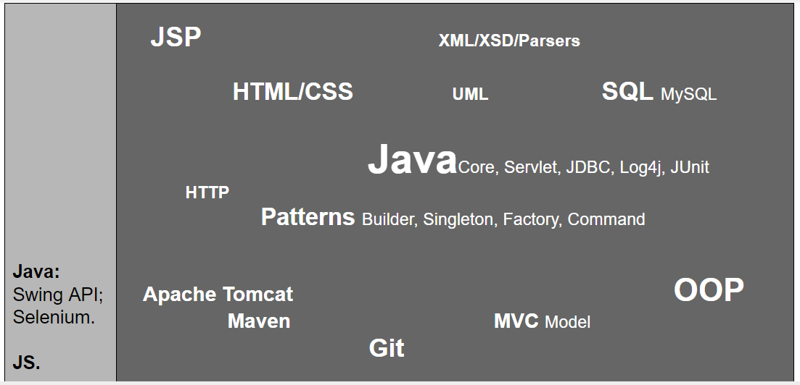

Fullstack QA | DevTestOps Engineer | SDET | AQA Tech Lead | AQA Team Lead

Page layout: • Adobe Assets.
Virtualization tools: • VirtualBox..
Version control systems: • Git; • GitHub Desktop; • SmartGit.
Development tools: • Eclipse; • IntelliJ IDEA; • Workbench; • HeidiSQL; • Brackets; • Sublime Text; • DBSchema.
Soft skills:
• proactive (turn the problem over, ask questions and bring things forward, try and experiment);
• good organization skills (reasoning, planning, priority assignment for the solution of the problem);
• the ability of get into the nuts and bolts (to look at the situation 'from the above', aptitude for learning, pass an opinion, work structuring);
• commitment (assess risks, defend decisions, analyze the impact on the work process);
• communicate confidently and work closely with other developers and professionals;
• tech savvy, highly motivated, energetic, creative, imaginative.
Education:
• BNTU, Mechanical engineering (2008-2013).
Courses:
• 2017: IT Academy. Java Fundamentals;
• 2017: GeekBrains Online Courses. Online Courses and Webinars;
• 2017: Udemy Online Courses. Java Programming Language;
• 2016: IBA Group . Java Programming Language;
• 2016: Javarush Online Courses. Java Programming Language.
Certifications:
• 2017: IT Academy «Java Fundamentals»;
• 2017: GeekBrains «Java. Intermediate»;
• 2017: GeekBrains «English language. Pre-intermediate»;
• 2017: GeekBrains «Java. Beginner»;
• 2017: GeekBrains «HTML&CSS. Beginner»;
• 2017: GeekBrains «Introduction To Programming. Beginner»;
• 2017: GeekBrains «Java Intensive Course. Introduction to Programming Language»;
• 2017: GeekBrains «Introduction to Programming. Online Course»;
• 2016: IBA Group «Java Programming Language».
Experience:
I'm making a web service for developing skills and learning new technologies.
The project represents a website, which offers customers 3 types of services related to travelling:
-Tour agency
-Hotel room rental
-Car rental
User performs following functions:
-registration;
-logging in;
-browsing three catalogues: tour offers, apartments and cars;
-using multicriteria sorting in catalogues;
-choosing an offer and making an order;
-receiving a bill for the order;
-account info editing;
-logging out.
Admin performs following functions:
-adding new offers to catalogues: tour offers, apartments and cars;
-marking damaged cars and creating a bill for the clients;
-fetching info about orders: by service, by user, by period.
Development of JSP and Servlet, development of client graphical user interfaces using HTML, CSS, JQuery and JavaScript for client-side validation in JSP and HTML pages.
Developed database for the application. Common resources and log4j logging framework are used. Modular testing, system testing and integration using JUnit and Selenium tests were performed.
Testing applications and troubleshooting / debugging. GIT is used as a repository for the project's application folders.